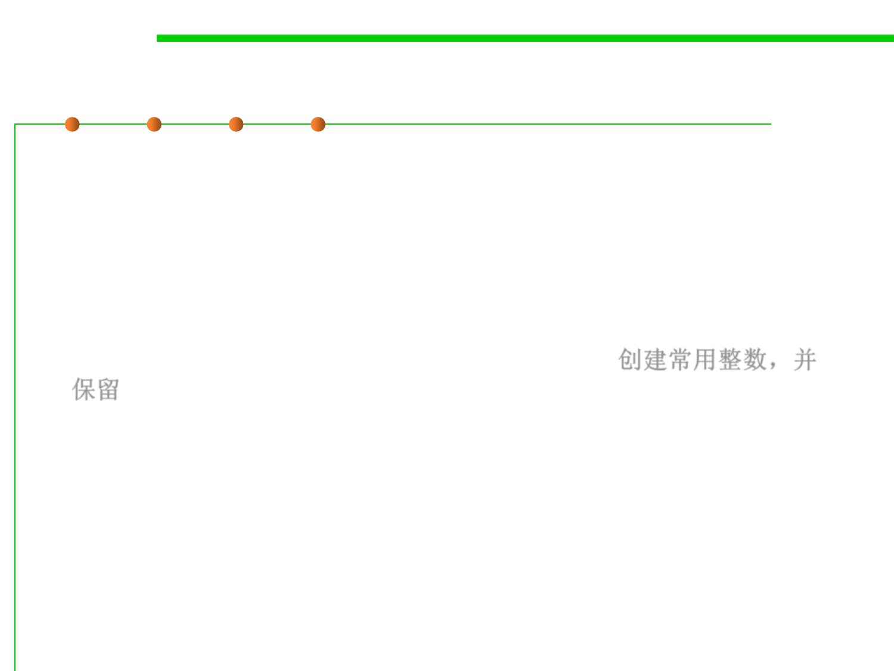

8.3 Code Tuning for Performance Optimization
Example: Integer canonicalization
▪ If you use just a few Integer objects in some defined way, you
repeatedly create the Integer objects with values 1, 2, 3, etc.,
and also access the integerValue() to compare them.
▪ Otherwise, you can canonicalize a few integer objects, improving
performance in several ways: eliminating the extra Integer
creations and the garbage collections of these objects when they are
discarded, and allowing comparison by identity. 创建常用整数，并
保留
public class IntegerManager {
public static final Integer ZERO = new Integer(0);
public static final Integer ONE = new Integer(1);
public static final Integer TWO = new Integer(2);
……
public static final Integer NINE = new Integer(9);
public static final Integer TEN = new Integer(10);
}